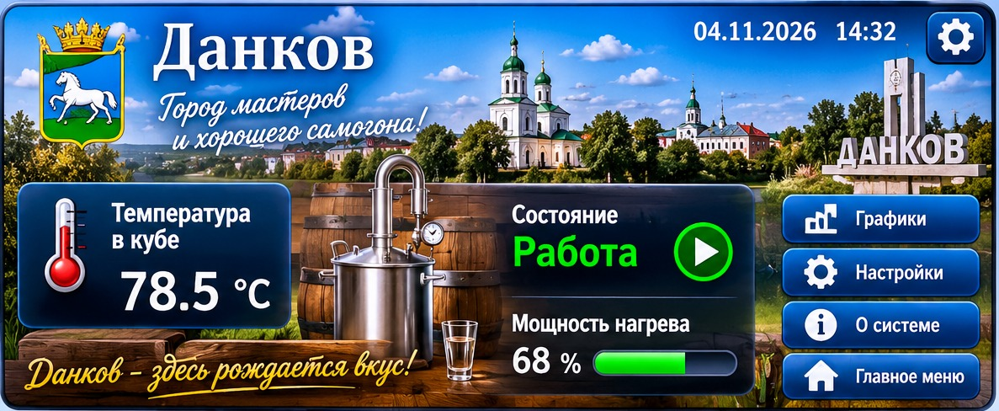

DISTILL CONTROL Данков · панель управления
—

Важно: это визуальный макет с переходами между меню. Показания на картинках демонстрационные; настройки пока не записываются в ОВЕН ПР200. Для реального управления потребуется настроить обмен с контроллером и проверить аппаратные защиты.
«Данков — город мастеров и хорошего самогона!»